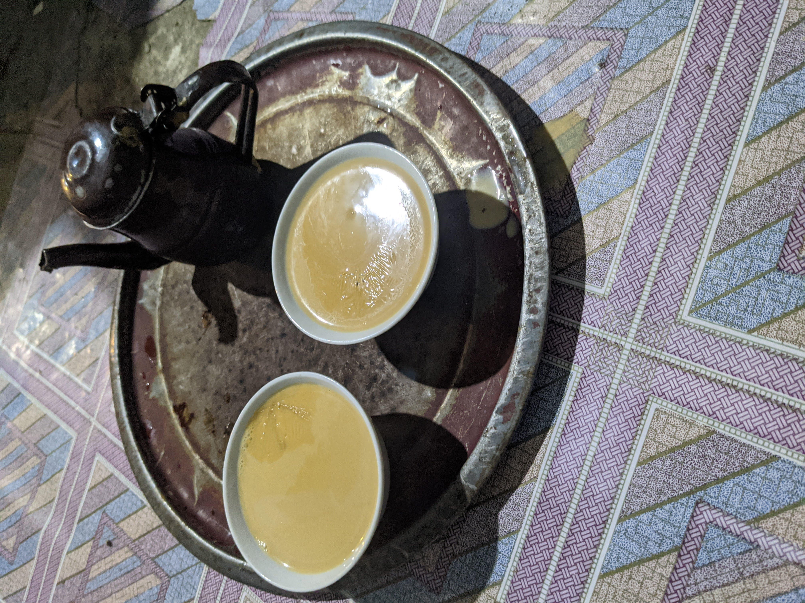
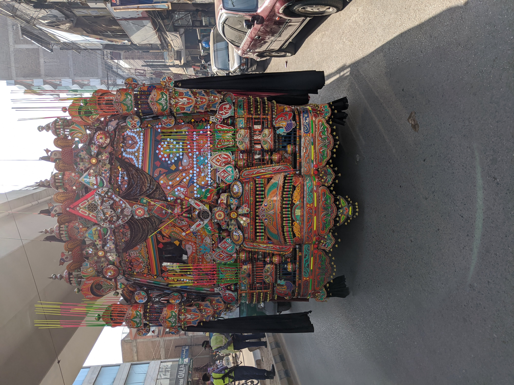
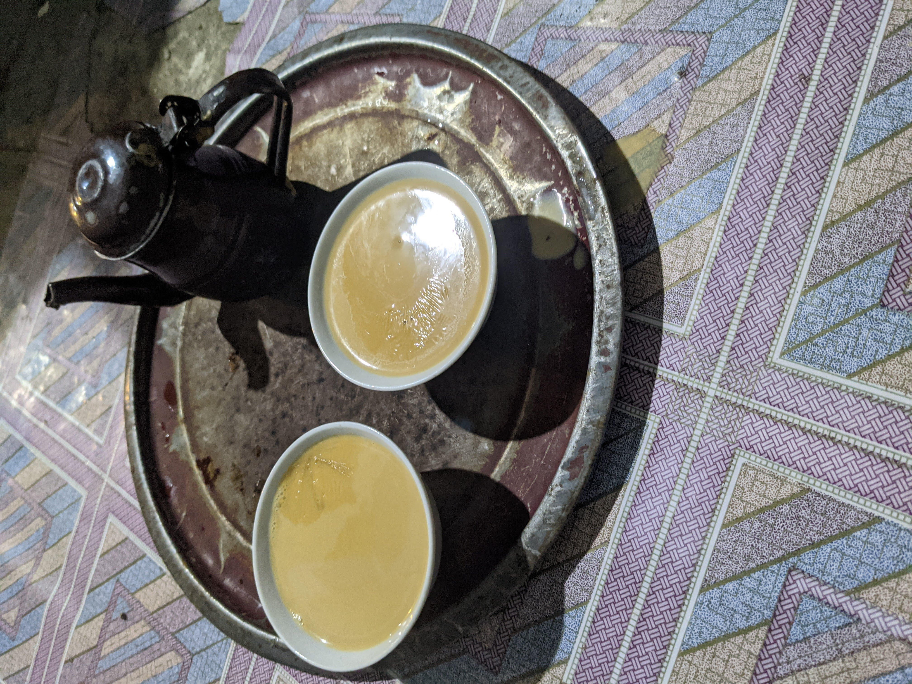
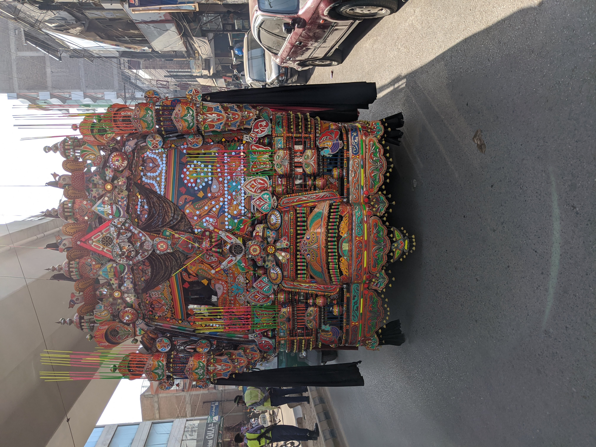

My name is Irfan Nisar and one of my favorite hobbies is photography. I enjoy taking photos because I like to capture every moment and make memories. I have been doing photography for about ten years, and I highly recommend it for anyone looking for a new hobby. I also pay more attention to the moment around me, natural moments like sunrises, sunsets, fog, and rain. I also like to capture more moments of people's lives, especially for moments that can't be repeated.
- Travling.
- Hiking.
- Playing.
I enjoy looking in to memories through pictuers. If you've never done photography, don't be worried because it's quite a simple hobby to adopt into your everyday lifestyle. You don't need any fancy equipment, all you need to begin with photography is your smartphone. To get started, stick to simple images and landscapes or just the face of a person. Get rid of any distracting elements in the camera view that may otherwise ruin your photo. Try shooting images from different angles to make the photo look cooler. Use lines such as the horizon or marks in the road to add a linear dimension to your images. Be creative and remember that sometimes a minimal approach gives the best results.
- The day you graduated.
- The day you head your child.
- The day you got married.
It's easy getting Started with Photography. It's pretty simple to get started with photography! All you need is a camera, and it can even be your smartphone. I hope you can find the resources below useful in your photography journey. It is one of the easiest hobbies to get into because everyone has a smartphone. A simple Google search for photography tips on your iPhone is a great place to get started.
- Smart phone with camera.
- Point shot camera.
- Dslr camera.

 


